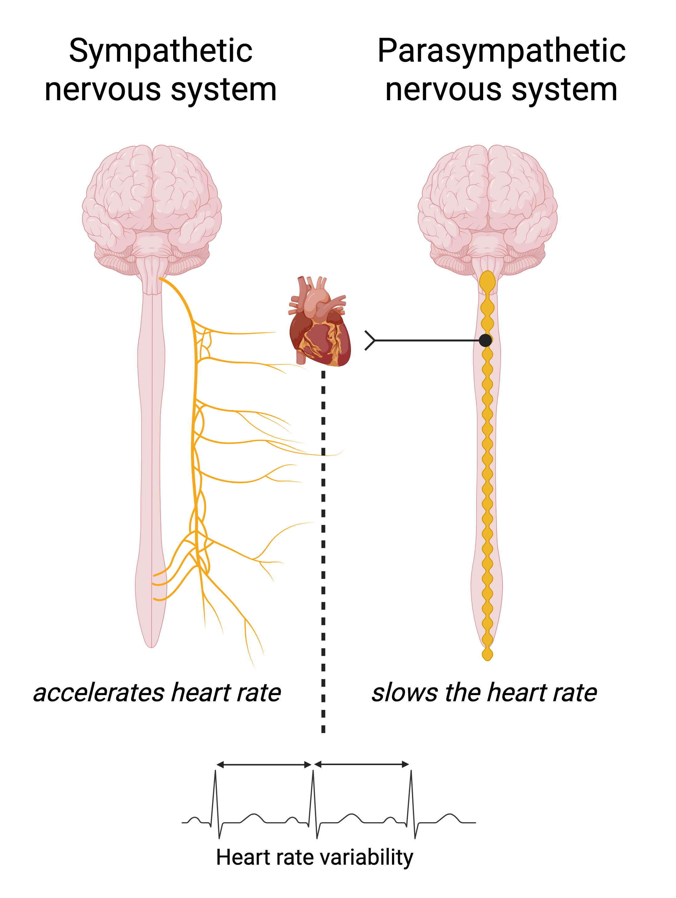

4 Background
This background introduces the concept of type 2 diabetes (T2D) and its associated cardiovascular risk. An overview is then provided of various cardiovascular complications, including arteriosclerosis, atherosclerosis, and heart failure. Finally, cardiovascular autonomic function (autonomic function) is described, along with its potential to enhance our understanding of cardiovascular disease (CVD).
4.1 Type 2 diabetes and prediabetes
The progression from normal glucose metabolism (NGM) to T2D is characterized by sustained elevations in blood glucose levels. T2D is defined by a progressive decline in beta-cell function, most often as a consequence of chronic insulin resistance.1,2 Insulin resistance occurs when tissues such as muscle and liver lose their sensitivity to insulin.2 As a result, glucose is not effectively taken up by these tissues and remains in circulation.2 Meanwhile, beta-cell function deteriorates, leading to a diminished insulin response to glucose levels.2 Years before a T2D diagnosis, these changes contribute to rising fasting and postprandial glucose levels.1
The body regulates glucose through various mechanism. During fasting, pancreatic alpha cells secrete glucagon, which stimulates hepatic glucose production via glycogenolysis and gluconeogenesis.2 After a meal, rising blood glucose levels stimulate pancreatic beta cells to release insulin and trigger the secretion of incretins, such as glucagon-like peptide-1 (GLP-1) from the intestines.2 Insulin and incretins work together to suppress hepatic glucose production, while insulin promotes glucose uptake in muscle and adipose tissue.2 Excess glucose is primarily stored as glycogen in the liver and muscles, with some converted to triglycerides for long-term storage. Multiple organs, including the pancreas, liver, kidneys, intestines, muscle, and adipose tissue are involved in this coordinated process.2 The autonomic nervous system plays a supportive role in glucose homeostasis by modulating metabolic activity. Parasympathetic signals tend to reduce glucose production, while sympathetic signals enhance it, especially during hypoglycemia.2
The World Health Organization (WHO) and American Diabetes Association (ADA) diagnostic criteria for T2D include fasting plasma glucose ≥7.0 mmol/L, 2 hour plasma glucose ≥11.1 mmol/L during an oral glucose tolerance test (OGTT), or hemoglobin A1c (HbA1c) ≥6.5 percent (48 mmol/mol).3,4 The OGTT measures glucose levels two hours after the ingestion of a standard 75 gram glucose load in the fasting state.4 Progression towards diabetes is a continuous process, with type 2 diabetes defined based on glucose thresholds associated with an increased risk of diabetes specific microvascular complications, particularly retinopathy.5 Many complications of diabetes, such as macrovascular disease, neuropathy, cancer, and cognitive impairment, may begin to develop at earlier stages of dysglycemia.6–8 This stage is referred to as prediabetes or high risk of diabetes and is defined by fasting plasma glucose levels between 6.1 and 6.9 mmol/L, 2 hour plasma glucose levels between 7.8 and 11.0 mmol/L (WHO criteria), and HbA1c levels between 5.7 and 6.4 percent (39 to 47 mmol/mol) (ADA criteria).4 In parallel with the growing prevalence of T2D, the prevalence of prediabetes is also increasing.9
Risk factors for progression to T2D and its complications range from genetic predisposition to lifestyle and socioenvironmental factors. While the most common risk factor for diabetes is central obesity, various other risk factors such as low density lipoprotein (LDL) cholesterol, triglycerides, and systolic blood pressure tend to cluster with obesity and with each other.10 Many of the risk factors for diabetes are also shown to be risk factors for CVD and other diabetes complications.10
Diabetes increases the risk of both microvascular and macrovascular complications, which are major contributors to the morbidity and mortality associated with the disease.2 Beyond conventional CVD risk factors, chronic hyperglycemia promotes the formation of harmful byproducts such as reactive oxygen species and advanced glycation end products, which drive oxidative stress and inflammation.11 These processes contribute to endothelial dysfunction and vascular damage.11 While the general mechanisms underlying macrovascular complications are well described, the identification of preclinical stages of CVD and the differentiation of CVD risk between individuals at high risk of diabetes and those with established T2D require further clarification.12
4.2 Cardiovascular disease
Globally, CVD remains the leading cause of death. At the population level, CVD risk is primarily attributable to modifiable lifestyle behaviors such as chronic stress, physical inactivity, unhealthy diet, excessive alcohol consumption, and smoking, as well as socio-environmental factors like socio-economic status and air pollution.13 At the individual level, these exposures often manifest through more proximal biological risk factors, including hypertension, hypercholesterolemia, diabetes, and obesity.14 Along the causal pathway, these intermediate conditions tend to cluster, thereby accelerating disease progression. These processes are underpinned by biomolecular mechanisms, including local and systemic inflammation, oxidative stress involving oxidized low-density lipoprotein (LDL), and dysregulated immune responses mediated by pro-inflammatory cytokines and signaling pathways.15 Risk factors contribute to distinct pathophysiological mechanisms across different types of CVD, involving structural, signaling, inflammatory, and hemodynamic changes within the cardiovascular system.15–17 Among these, cellular and molecular signaling pathways play a central role in regulating vascular tone, cardiac function, and inflammatory responses. These processes are closely modulated by the autonomic nervous system through sympathetic and parasympathetic nerve branches.18–21
4.2.1 Arteriosclerosis
Evidence emphasizes the role of vascular aging in early disease development, extending beyond the traditional focus on cardiovascular endpoints.17 Arteriosclerosis, commonly referred to as arterial stiffness, has been identified as a hallmark of this process. Biologically, the medial layer of large arteries consists of a structured network of vascular smooth muscle cells together with elastic and collagen fibers, forming functional musculoelastic sheets.22 Arterial stiffness has been found to arise from progressive remodeling of the arterial wall.17,23 This remodeling has been driven by changes in the structural interactions between elastin and collagen fibers, along with functional alterations in vascular smooth muscle cells and the accumulation of calcium and advanced glycation end products.22 Remodeling of the arterial wall has been shown to increase systolic blood pressure and reduce coronary perfusion, thereby contributing to the development of hypertension and, eventually, cardiovascular disease.24 Additionally, arterial stiffness has been associated with elevated pulsatile load on the microcirculation, promoting the progression of chronic kidney disease, vascular dementia, and Alzheimer’s disease.17
4.2.2 Atherosclerosis
Atherosclerosis is characterized by the accumulation of cholesterol, lipids, and other substances within the arterial walls, forming plaques that narrow the arteries and reduce blood flow often at specific sites such as the coronary and carotid arteries.25 This chronic process can lead to progressive occlusion of the vessel, contributing to reduced oxygen supply to the heart26, often leading to symptoms of angina.
Atherosclerotic plaques can be classified into stable and unstable types, each with distinct structural characteristics and clinical implications. Stable plaques typically have a thick fibrous cap composed of collagen, a small lipid core, and low levels of inflammation.27 These plaques are less likely to rupture and tend to remain intact over time due to internal remodeling. In contrast, unstable plaques, also known as vulnerable plaques, often contain a large lipid-rich necrotic core, a thin fibrous cap, and infiltration by inflammatory cells such as macrophages.27 A well-recognized subtype of unstable plaque is the thin-cap fibroatheroma, which is particularly prone to rupture. When rupture occurs, the necrotic core becomes exposed to the bloodstream, initiating the formation of a thrombus or blood clot. This acute event can abruptly obstruct the artery, resulting in myocardial infarction (MI).27 Chronic ischemia due to reduced coronary perfusion can lead to myocardial remodeling, impaired contractility, and electrical instability, thereby increasing the risk of arrhythmias and heart failure.28,29
Myocardial infarction
MI occurs due to the rupture of an atherosclerotic plaque in the coronary arteries, triggering thrombus formation that blocks blood flow.30 This leads to oxygen deprivation (ischemia) and subsequent myocardial injury or necrosis.30 If untreated, this process can cause extensive cardiac damage and fatal arrhythmias.30 Over the past decades, the incidence of MI has declined in high-income countries with a marked reduction in MI-related mortality.31 These improvements are largely attributed to a combination of public health initiatives and medical advances. On the public health front, a substantial decrease in smoking prevalence has been the most important lifestyle-related factor contributing to the reduction in CVD.32,33 Medically, the improved preventive management of hypertension and hyperlipidemia has reduced the burden of atherosclerotic disease.31 In acute care, the widespread adoption of evidence-based interventions such as thrombolytic therapy, percutaneous coronary interventions (including stenting), and coronary artery bypass grafting has improved survival and outcomes following MI.34 In T2D, the risk of MI is elevated by 72%, with an approximately threefold risk among patients under 60 years compared to age under 60 without T2D.35 Similar to the general population, MI incidence and fatality have declined among individuals with diabetes.36,37
Stroke
The majority of strokes are ischemic and result from an obstruction in a cerebral artery. The process often begins with the development of atherosclerotic plaques at the carotid artery bifurcation, which can lead to the formation of emboli38. These emboli may travel through the bloodstream and become lodged in the cerebral arterial tree, ultimately causing an ischemic stroke38. The second main cause is hemorrhagic stroke, which is characterized as a hypertensive small-vessel disease, leading to small lipohyalinotic aneurysms that subsequently rupture, causing intracerebral bleeding.39,40 Ischemic stroke remains one of the global leading contributors to mortality and disability.41 The incidence, prevalence, and cause-specific mortality of stroke remain high but have stagnated, although some declines have been observed in high-income countries.42 Individuals with elevated glucose levels, as measured by fasting plasma glucose, OGTT, or HbA1c, have a 26% higher risk of stroke compared to those with normal glucose levels.43,44 In T2D, the ischemic stroke risk is elevated almost two-fold compared with individuals without diabetes.35
4.2.3 Heart failure
Heart failure develops gradually with age and often accelerates with the progression of T2D. As prevention and treatment of CVD have improved survival in recent years, the prevalence of heart failure has increased, while the incidence remains stable, but may rise with aging populations.45
Heart failure may arise as a consequence of atherosclerosis, arteriosclerosis, or both, contributing to myocardial ischemia, pressure overload, and structural cardiac changes.46 Heart failure can be defined hemodynamically as the inability to maintain adequate cardiac output at rest or during exertion, or the ability to do so only with elevated cardiac filling pressures.46 It is a complex cardiovascular disease caused by structural and functional changes in the heart musculature, affecting systolic and/or diastolic pumping function.46 Heart failure is generally classified into two subtypes: heart failure with reduced ejection fraction (HFrEF) and heart failure with preserved ejection fraction (HFpEF).46 Both subtypes involve cardiac remodeling but are defined by left ventricular ejection fraction (LVEF).46 HFrEF is defined by an LVEF < 40%, while HFpEF is characterized by an LVEF ≥ 50% along with structural or functional cardiac abnormalities, as assessed by echocardiography.46 HFrEF is often a consequence of repeated, non-fatal MIs. These events can leave behind scar tissue in the myocardium, impairing the heart’s ability to contract effectively and leading to progressive systolic dysfunction.47
The most common feature of HFpEF is left ventricular diastolic dysfunction, caused by impaired relaxation and increased stiffness, leading to elevated left atrial pressure and reduced diastolic reserve.48,49 Over the past decades, the prevalence of HFpEF has increased with an aging population and more individuals living with conditions such as hypertension, diabetes, and obesity.47 It is diagnosed based on structural or functional abnormalities identified through echocardiographic measures, such as left ventricular hypertrophy, left atrial enlargement, or elevated filling pressures.47 The diagnosis may seem straightforward, but it is often challenging in community settings, as patients frequently present without typical heart failure symptoms (e.g., shortness of breath) and are not routinely assessed with biomarkers like N-terminal pro-B-type natriuretic peptide (NT-proBNP) or brain-neuretic-peptide (BNP).47,49 As a result, HFpEF is commonly underdiagnosed and consequently detected at more severe stages, leading to hospitalization.47,49
4.3 Cardiovascular autonomic dysfunction
The cardiovascular system is regulated by the autonomic nervous system, which influences heart rate and vasoconstrictuion through the sympathetic and parasympathetic nerves.20 Sympathetic activation increases heart rate and myocardial contractility by stimulating the sinoatrial (SA) node, atrioventricular (AV) node, and ventricular myocardium. In contrast, parasympathetic activation primarily reduces heart rate by directly modulating SA node activity through vagal stimulation.20 It also slows AV nodal conduction, predominantly via the left vagus nerve, thereby prolonging atrioventricular conduction time.20 Afferently nerves mainly carry sensory information (e.g., baroreceptor input from the carotid sinus and aortic arch) to the brain, which then adjusts efferent autonomic output to regulate arterial tone. Hence, the autonomic nervous system dynamically regulates heart rate and blood pressure to maintain homoeostasis in response to physiological demands, such as rest, stress, eating and physical activity.20
 (Source: Author)
In youth, the autonomic nervous system is highly adaptive and responsive to living conditions, maintaining autonomic balance. However, with aging, there is a gradual decline in parasympathetic function and an increase in sympathetic activity. Additionally, metabolism-related conditions such as obesity and diabetes have been shown to further contribute to cardiovascular autonomic dysfunction (autonomic dysfunction).50 Autonomic dysfunction reflects a stressed cardiometabolic environment, as both dysfunction in lipid and glucose metabolism are associated with increased sympathetic activity.50 This dysfunction may result from cumulative neural damage mediated by mechanisms such as hyperinsulinemia, insulin resistance, and elevated levels of adipokines. At the same time, autonomic dysfunction is known to disrupt lipid and glucose metabolism.50 Therefore, the relationship between autonomic dysfunction and cardiometabolic factors is likely a vicious cycle.51 The consequences can lead to autonomic dysfunction/neuropathy (CAN), resulting in dysregulation in heart rate and vascular dynamics. CAN prevalent in 12-73% in indiviudals with T2D is liked to CVD diabetic kidney disease, and all-cause mortality.52–54 In this dissertation, ‘autonomic dysfunction’ will be used as the broader term, while ‘CAN’ will refer specifically to autonomic dysfunction resulting from neuropathy in diabetes.
Autonomic function can be assessed using heart rate variability (HRV) indices, which measure the variation in successive normal RR intervals in milliseconds. HRV provides time- and frequency-domain estimates of the balance between sympathetic and parasympathetic activity.55 High HRV reflects an autonomic nervous system with strong adaptability to the body’s demands, whereas low variation indicates poor adaptation to changing conditions. HRV changes in response to different physiological or environmental conditions (e.g., sleep, stress, posture, physical activity), and these changes can be observed in its natural 24-hour (circadian) pattern.56 Most studies have examined autonomic function using short-term ECG recordings at rest.57 However, extended HRV recordings across the circadian cycle may offer deeper insights into the influence of lower-frequency variability sources, such as very-low frequency (0.003–0.04 Hz) and ultra-low frequency (≤0.003 Hz).55 HRV has been applied across several research domains. For example, in psychology as a marker of mental stress, in exercise physiology as an indicator of recovery, in cardiovascular research as a marker of autonomic dysfunction due to cardiac complications, and in diabetes research as a marker of autonomic neuropathy.52,58–60T2D alters the expression of sympathetic bursts, as measured by resting muscle sympathetic nerve activity (MSNA). MSNA is elevated in individuals with both T2D and hypertension, compared to those who are normotensive, regardless of whether they have diabetes or not.61 Parasympathetic activity is also impaired in individuals with high cardiometabolic risk and T2D, as reflected by reduced baroreflex sensitivity and lower HF and RMSSD short-term HRV.62 Before onset of diabetes and during progression of diabetes long-term (24-hour) HRV has shown to be lower compare to those with .51,63 Cardiovascular autonomic reflex tests (CARTs) and orthostatic hypotension are considered the gold standard for assessing CAN.64 The diagnosis includes assessing pulse rate ratio under test conditions, such as the deep breathing test, the lying-to-standing test, and the Valsalva maneuver.64 Both HRV and CARTs have shown to be associated with cardiovascular disease, heart failure, and all-cause mortality, primarily in populations with T2D or established cardiovascular disease.53,57,65 However, it remains unclear at which stage in the progression of diabetes risk to pre-diabetes to diabetes these measures begin to influence the risk of cardiovascular complications.
4.4 Risk-stratification
Current cardiopreventive guidelines place strong emphasis on prevention and treatment of T2D. The 2022 ADA/EASD guidelines for the management of hyperglycemia in T2D recommend, cardioprotective medication (glucagon-like peptide-1 receptor agonists [GLP-1RA] and Sodium-Glucose Transport Protein 2 inhibitors [SGLT2i]) as first-line options for individuals at high cardiovascular risk.66 Due to their benefits in heart failure, SGLT2i are specifically recommended for patients with documented HFrEF or HFpEF. High cardiovascular risk is defined as the presence of at least two risk factors at age >55 years, such as obesity, hypertension, smoking, dyslipidemia, or albuminuria.66 However, no additional preclinical markers are recommended to identify individuals at higher CVD or HF risk or for younger individuals. Despite their increased risk of cardiovascular complications, individuals at high risk of developing diabetes remain outside structured treatment options, even though diabetes risk and cardiometabolic markers can be successfully modified through lifestyle interventions and medication such as GLP-1 analogoues.67,68
During the progression towards and following the onset of T2D, dysglycaemia may be accompanied by early signs of cardiovascular dysfunction, such as arterial stiffness or cardiac remodeling.69,70 These reflect underlying disease processes that indicate elevated CVD risk. Risk stratification, the classification of individuals by estimated risk using conventional scores such as SCORE2 or Framingham, biomarker levels, omic data including metabolomic, proteomic and genomic profiles, or preclinical indicators, can support early identification of high risk individuals.71–73
While traditional risk scores rely on established risk factors, predictive accuracy may be improved by incorporating intermediate preclinical measurements such as HRV, pulse wave velocity or intima media thickness.71,72,74–78 However, these often require more detailed clinical assessment and may be less feasible in primary care. More extensive measures of CVD risk stratification in prediabetes and type 2 diabetes may help tailor solutions to different stages of diabetes risk, ranging from lifestyle interventions in earlier stages to pharmacological treatment in later stages.12,49,73
 (Source: Author)
(Source: Author)
Autonomic dysfunction despite its relationship with cardiovascular complication has not been used in clinical practice in Denmark. Larger epidemiological cohort studies encompassing various stages of diabetes risk, from to prediabetes, onset of T2D, and longer term progression of T2D, serve as valuable resources for identifying risk-stratification opportunities. Epidemiological studies provide a broad representation of the target population, enabling an understanding of the relationship between autonomic dysfunction and cardiovascular complications across different levels of care: public health, primary care, and secondary care. By utilizing observational cohorts, we have the potential to determine when, along the trajectory of diabetes progression, autonomic function becomes a meaningful factor for cardiovascular risk stratification.73